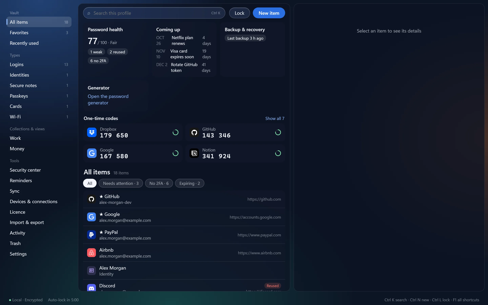
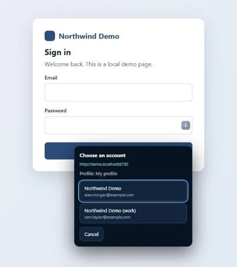
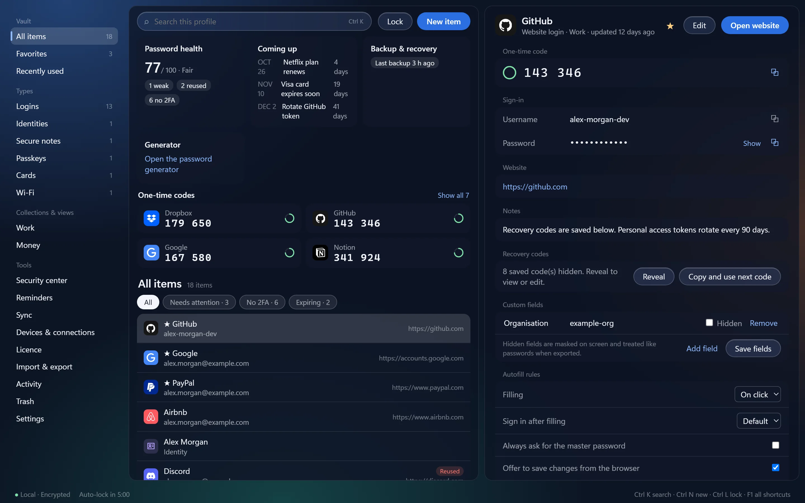
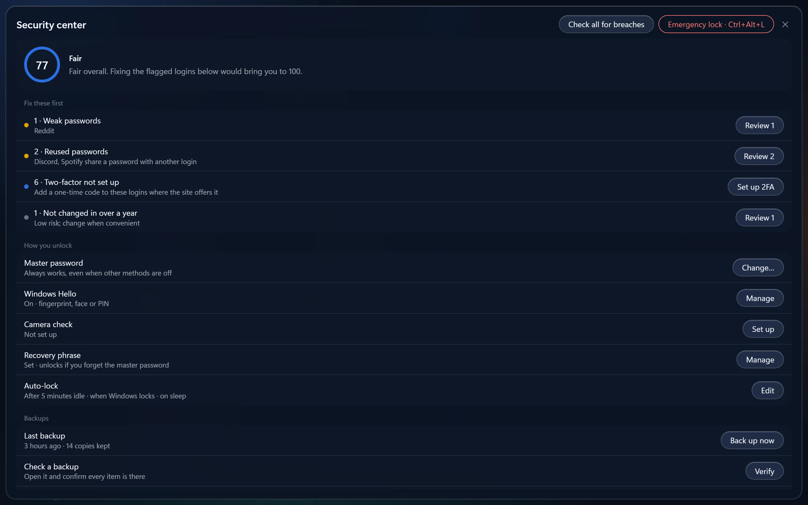

Um gerenciador de senhas que fica no seu PC.
Seu cofre fica nos seus dispositivos. Nós nunca o vemos. Você decide se cópias criptografadas viajam pelo Wi-Fi de casa, pela sua própria pasta na nuvem ou para lugar nenhum.
- Sem conta
- Sem servidor do LocalGateKeys
- Sem telemetria

Veja nos temas claro e escuro
O LocalGateKeys segue o tema do seu Windows, ou você pode escolher um. Todas as telas mostram um cofre de demonstração com contas fictícias.


Você decide para onde vão as cópias criptografadas
Cada dispositivo guarda seu próprio cofre criptografado. Nada sai de um dispositivo a menos que você configure isso. A sincronização entre seus PCs faz parte do Pro.
Lugar nenhum
O padrão, em todas as edições
O cofre fica neste PC. Os backups agendados são arquivos criptografados que você guarda onde quiser, inclusive em um pendrive ou em uma pasta sincronizada.
Seu Wi-Fi de casa
Pro
Emparelhe seus PCs uma única vez com um código de emparelhamento de uso único. Quando estão na mesma rede e desbloqueados, sincronizam diretamente um com o outro por uma conexão criptografada. Nenhuma conexão com a internet é usada.
Sua própria pasta na nuvem
Pro, se você ativar
Aponte a sincronização para uma pasta do OneDrive, Dropbox, Google Drive ou iCloud Drive que você já usa, protegida por uma senha de sincronização. Seu provedor de nuvem guarda arquivos criptografados que não consegue ler. Nós não participamos de forma alguma.
Preenche logins no Chrome e no Edge
A extensão de navegador fala com o app LocalGateKeys no seu PC por um pequeno auxiliar local. Ela oferece apenas logins salvos para o site exato em que você está. Também preenche códigos 2FA, endereços e cartões de pagamento, e oferece salvar novos logins depois que você entra.
As chaves de acesso também funcionam: um site pode salvar uma chave de acesso no seu cofre e fazer o login com ela, e você aprova cada uma no app de desktop.
A extensão nunca recebe o seu cofre inteiro, e nenhuma solicitação sai do seu computador.

E em apps do Windows
O preenchimento de apps de desktop funciona com janelas de login de programas do Windows, como lançadores de jogos. Você vincula uma janela uma vez; depois disso, um botão ao lado do campo de senha, ou um atalho de teclado, preenche os campos salvos.
Ele lê apenas as informações de acessibilidade que o Windows expõe sobre uma janela. Nunca registra suas teclas, nunca injeta código em outro programa e se recusa a preencher se o app ou a janela tiver mudado.
Códigos 2FA integrados
Salve a chave de configuração de dois fatores de um site junto com o login e o LocalGateKeys mostra o código atual no topo do login. Um cartão Códigos de uso único na página Início lista todos eles. Adicione uma chave colando um recorte do QR code do site, mostrando-o à webcam ou a partir de uma exportação do Google Authenticator.
Os códigos são calculados no seu PC. Os códigos 2FA fazem parte do Pro.

Verifica suas senhas
O gerador cria senhas fortes ou frases-senha. A saúde das senhas mostra quais senhas salvas são fracas, repetidas, antigas ou estão sem código 2FA. Se você a ativar, uma verificação de vazamento que você inicia compara as senhas com vazamentos conhecidos, enviando apenas cinco caracteres de um hash.

Grátis para os seus primeiros 4 itens
A edição Free tem preenchimento no navegador e em apps do Windows, chaves de acesso, Windows Hello, frase de recuperação, importações e backups criptografados agendados, para até 4 itens sem limite de tempo. O Pro adiciona itens ilimitados, sincronização, códigos 2FA e documentos.
O Pro remove o limite por um único pagamento de US$4.99, com todas as atualizações futuras incluídas. Sem assinatura, nada a renovar.
Transparência sobre segurança
O cofre usa Argon2id e AES-256-GCM, e o projeto está descrito em termos simples, inclusive contra o que ele não protege.